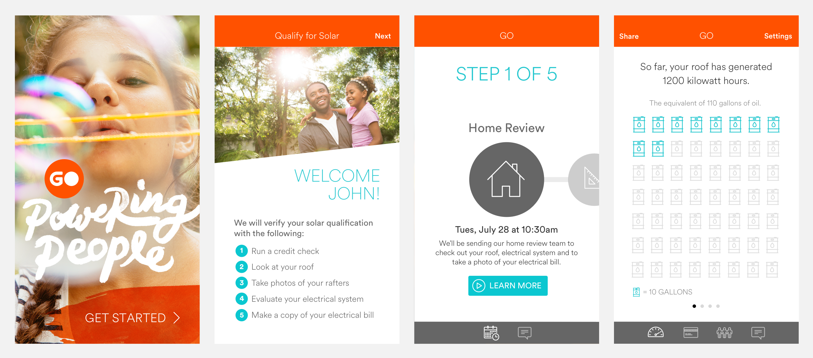
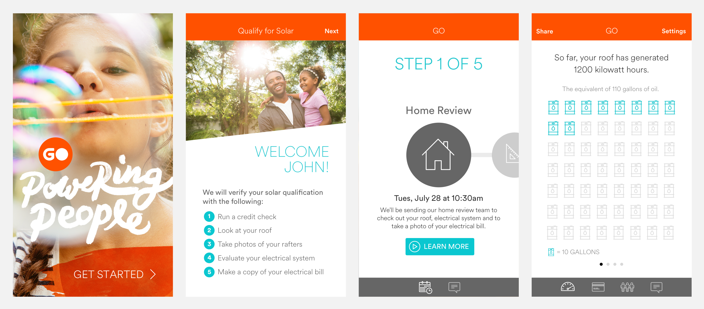

AI / Chat Bots
Slack Bot
A Slack chat bot I built using Go. Domain is workplace acknowledgment. Can handle many different tasks, including asking surveys, pulses and propping getting team members talking positively about each other. Functionality also includes mentioning team members, communicating results to an API, and handling edge cases like preventing a user from mentioning a channel when they didn't intend to.
Facebook Messenger Bot
This Facebook Messenger bot asks for ingredients and makes recipe suggestions based on the users responses. Responses do not need to be structured. As long as the user mentions an ingredient and a positive or negative sentiment, it will return recipes that include or exclude those ingredients. "I really love artichoke" will look for recipes with artichoke. "I'm allergic to peanuts" will return recipes without peanuts.
Website Chat Bot
This bot offers response choices and then recommends drawings to enter based on the users response. An algorithm is used to match their answers with open drawings as close as possible.


{kind=link}
{kind=link}
{kind=link}
iOS / Mac
{kind=link}
{kind=link}


{kind=link}

{kind=link}
{kind=link}
{kind=link}


 

{kind=link}
{kind=link}
{kind=link}
This demonstrates an application that syncs via
a Rails back-end. I developed all the components of
this application, including both the iOS app, Mac app,
web app and back-end API.
Timeline
-
Getting Started
2007I told a group of millionaires I could build them a website, because I thought it would be cool to be friends with millionaires. I went home and taught myself how to build a website. This is how I learned that I loved programming. I’m 21 years old.
-
Back-End
2008My new friends included me in a side venture where I built a platform for virtualizing wedding receptions for couples. The idea was not a hit, but I learned how to program a back-end.
-
Getting Better
2009I interned for The Church of Jesus Christ of Latter-Day Saints and learned the importance of writing maintainable code by maintaining someone else’s terrible code. This is also where I met Rob Foster, my design counterpart.
-
Calvetica
2010I built an iOS app called Calvetica with Rob Foster. It reached #50 (paid) in the entire App Store. Praised by John Gruber, Merlin Mann and thousands of publications and blogs. Google it. Calvetica has sold hundreds of thousands. I used some of the money to pay off student loans and the rest I used to help people, like buying my mom her first new car with working air conditioning in 20 years.
-
Graduation
2011Built Dialvetica (retired) that sold tens of thousands and ranked #9 (paid) for productivity. I was asked to speak to many beginning CS courses as an example of a student doing cool things. This is also the year I graduated with a B.S. in Computer Science from the University of Utah.
-
Firehose
2012Built a website chat service including a Rails backend, a Node.js chat server, an Ember.js front-end, an iOS and Mac app. All this in about 6 months. Brought in thousands of dollars a month, but couldn't find an efficient distribution strategy to compete with Zopim et al. I also spoke at a conference in Australia to an audience of hundreds about building great iOS apps.
-
Day One
2013I joined Bloom Built for about a year to work on the popular Day One app. I was solely responsible for building the publish UI. I worked on the iPhone and Mac app. The Mac app won an Apple Design Award.
-
EventBoard
2014I joined EventBoard to work on the iPad app that runs on room displays. Later, I helped redo their entire front-end with Ember.js. I impacted the entire company culture by leading everyone to be passionate about testing. I led by example with 100% test coverage on the front-end and even wrote dozens of tests for the Django back-end.
-
Oven Bits
2015In November I was recruited by Oven Bits to help build a company-culture-strengthening app. I built a sophisticated Slack Bot using Go that could carry on complex conversations.
-
Chat Bots
2016Loving work at Oven Bits. I've built 3 chat bots. I'm becoming an expert at it. One for helping coworkes communicate positively, a prototype for discovering recipes and a travel recommendation bot for lays.com.
Open Source
Objective-C / Swift
| Option | Description |
|---|---|
| Jumper | Time and date library in Swift. |
| Touch Forms | The forms framework that should come with UIKit |
| Fake Events | Allows you to add lots of test event data to an iOS simulator or device using EKEventKit framework |
| ATKColor | Color categories |
| Xcode Plugin | An Xcode plugin for aligning code so it's more readable. |
| FamilySearchCocoa | An easy to use library for interacting with the FamilySearch.org API on iOS or OS X |
| AutoKhan | Auto plays Khan Academy videos one after another. |
| Big Splash tvOS | Unsplash Client For Apple tvOS |
| MTAnimation | Animate UIView with 25+ timing functions. (Bounce, elastic, exponential, etc.) |
| MTPDF | Objective-C PDF objects. Doing my part to help us stay out of the headache that is Core Foundation. |
| MTPocket | Cocoa Web Requests |
| MTGeometry | An extension to Core Graphics Geometry. Intersections, scaling, etc. |
| MTDates | A thread safe date calculation library with all the date functions you'll ever need. |
| MYSForms | Easy forms for iOS |
| MYSRuntime | Obj-C Library that makes runtime self-inspection and class modification dead easy. |
| MTStringAttributes | Easier way to create an attributes dictionary for NSAttributedString |
| MTQueue | Add blocks to queues in a super terse and readable way! |
| MTPencil | Draw animated lines (like an invisible pencil) with Core Graphics. (Prototype, will get much better). |
| MYSCoreText | An Objective-C wrapper around Apple's Core Text framework. |
| MTTimer | An Objective-C timer that restricts firing to a time range. If it's called BEFORE min, it waits for min. If it's called AFTER max, it's called at max. |
| MTFittedScrollView | A UIScrollView subclass that resizes itself to fit around its content. |
| EKEventToiCal | Returns a string in iCal format for an EKEvent object. |
Go |
|
| Artifiscal Learner | An extremely simple example of using Go to store stock prices. |
Ruby |
|
| Flunk | A gem for testing Ruby on Rails web APIs by simulating a client. |